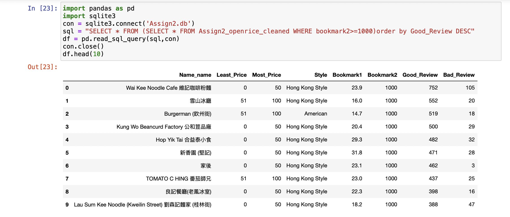
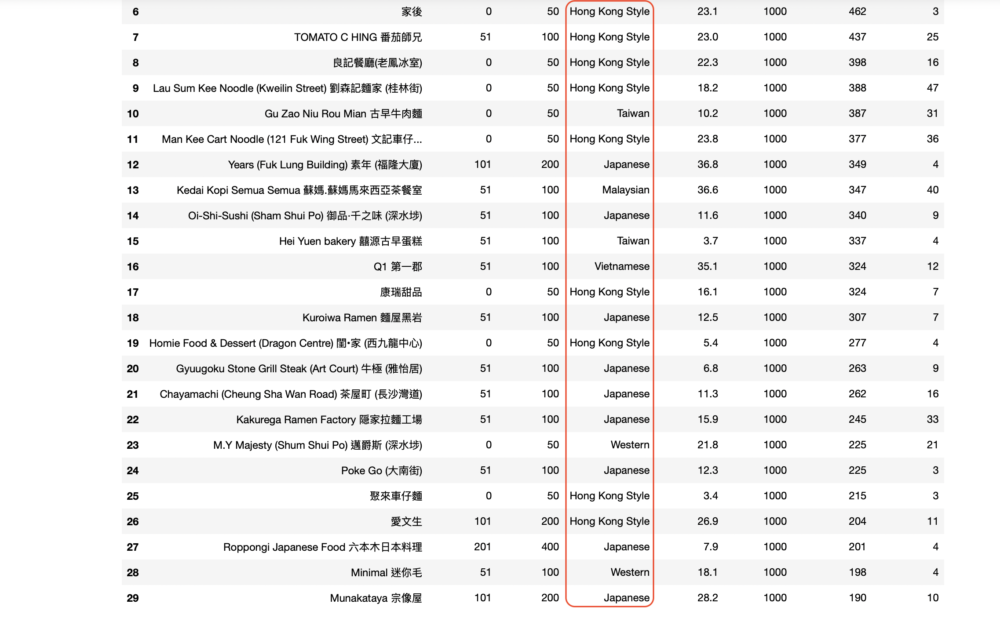
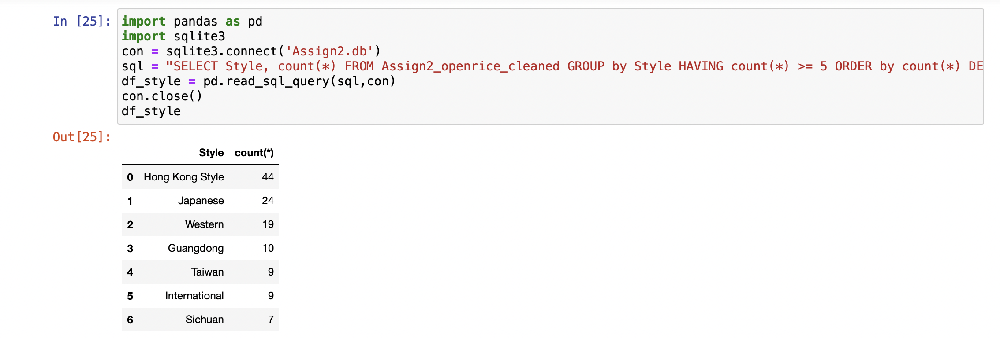
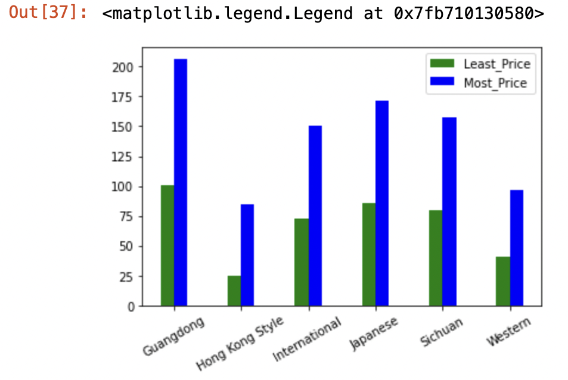

Assignment 2
This is my SECOND assignment about How to find the right restaurant in Sham Shui Po with openrice when you don't have an EXACT idea of what to eat.

As you can see in the image, I firstly selected the restaurants with more than 1,000 bookmarks out of the cleaned list and ranked them in descending order according to the number of good reviews. Then, we can apparently see that most of the restaurants in the top 10 are Hong Kong Style. And if we extend the range to the top 30, we can see that Japanese restaurants also perform well, occupying almost a third of the top 30 positions (as shown in the chart below).
 After that, I counted the restaurants with different styles through sql and filtered out the dishes with a number greater than 5, also in descending order. The top three were Hong Kong style, Japanese and Western.
Finally, I have analysed the prices of the dishes based on the above step: I averaged the lowest and highest prices for each of these styles of restaurant and compared them visually in a bar chart.
In summary, you can find a very large number of popular Hong Kong style restaurants in Sham Shui Po, and overall they are cheaper compared to other dishes. But if you want to try other tastes, there are a few restaurants that sell Japanese food which are also good choices, though they may cost more.
More descriptions can be found in my journal.